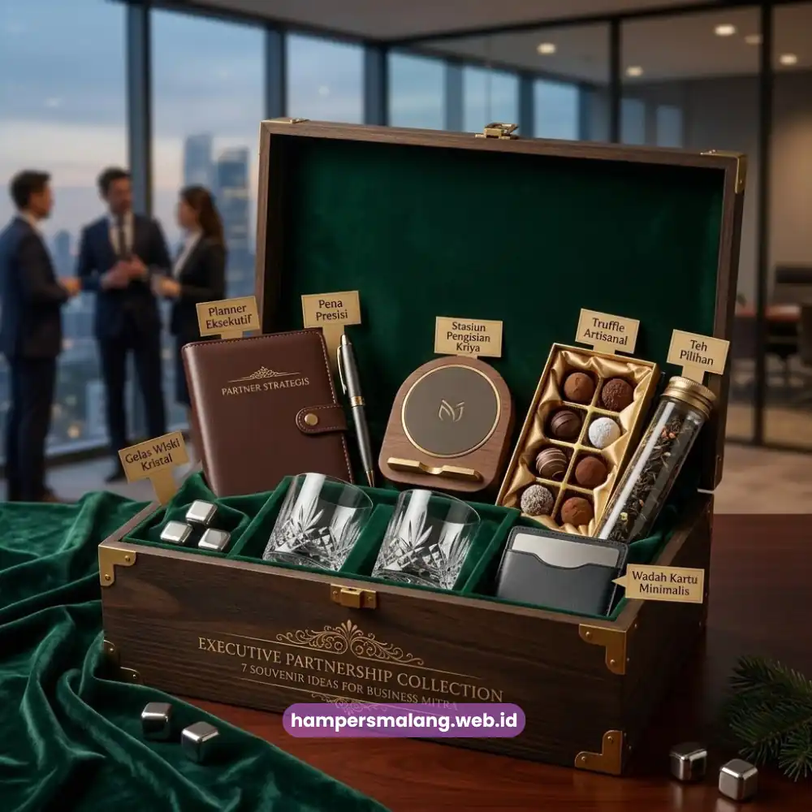

Souvenir kantor elegan untuk mitra bisnis mencakup produk seperti hampers makanan premium, merchandise berlogo, dan set alat tulis yang dikemas rapi untuk menunjukkan profesionalisme perusahaan.
Pemilihan souvenir yang tepat dapat memperkuat kesan positif dan mempererat hubungan kerja sama jangka panjang. Artikel ini membahas berbagai pilihan souvenir kantor elegan yang relevan untuk kebutuhan korporat.
- Souvenir kantor elegan mencerminkan profesionalisme dan perhatian perusahaan terhadap relasi bisnis.
- Pilihan populer meliputi hampers makanan premium, merchandise berlogo, dan set alat tulis eksklusif.
- Souvenir yang tepat dapat memperkuat pengenalan brand secara halus dan berkelanjutan.
- Waktu pemberian souvenir sebaiknya disesuaikan dengan momen penting dalam hubungan bisnis.
- Hampers Malang menyediakan berbagai pilihan souvenir kantor yang dapat disesuaikan dengan identitas perusahaan.
Mengapa Souvenir Kantor Elegan Penting bagi Hubungan Bisnis?
Souvenir kantor elegan penting karena menjadi simbol apresiasi yang memperkuat kepercayaan dan hubungan jangka panjang antara perusahaan dengan mitra bisnisnya.
Dalam dunia korporat, pemberian souvenir bukan sekadar formalitas, melainkan cara halus untuk menunjukkan bahwa perusahaan menghargai kerja sama yang telah terjalin.
Souvenir yang dipilih dengan cermat dapat mencerminkan tingkat profesionalisme dan perhatian terhadap detail, dua hal yang sangat dihargai dalam relasi bisnis. Selain itu, souvenir yang berkualitas turut membangun citra positif perusahaan di mata mitra maupun calon klien lain yang mungkin melihatnya.
Baca Juga: Souvenir Kantor Elegan untuk Mitra Bisnis di Malang
Apa Saja Jenis Souvenir Kantor Elegan yang Populer?
Jenis souvenir kantor elegan yang populer meliputi hampers makanan premium, merchandise berlogo, set alat tulis eksklusif, hingga produk lokal khas daerah yang dikemas secara profesional.
Hampers Makanan dan Minuman Premium
Hampers berisi camilan premium, cokelat, atau kopi pilihan menjadi salah satu souvenir yang paling sering dipilih karena praktis dan disukai banyak kalangan. Kemasan yang elegan dengan warna netral atau warna brand perusahaan membuat hampers jenis ini terlihat profesional saat diterima oleh mitra bisnis.

Merchandise Berlogo Perusahaan
Merchandise seperti tumbler, notebook, atau tas kanvas dengan logo perusahaan menjadi pilihan yang fungsional sekaligus berdaya branding tinggi. Barang-barang ini dapat digunakan berulang kali sehingga logo perusahaan terus terlihat oleh penerima dalam aktivitas sehari-hari.
Set Alat Tulis Eksklusif
Set alat tulis seperti pulpen premium, buku catatan kulit, dan organizer meja memberikan kesan formal dan elegan, cocok diberikan kepada mitra bisnis di level manajerial atau eksekutif.
Produk Lokal Khas Daerah
Menghadirkan produk lokal khas daerah dalam kemasan souvenir kantor dapat memberikan nilai tambah tersendiri, terutama jika mitra bisnis berasal dari luar kota dan belum familiar dengan produk tersebut.
Souvenir Kombinasi untuk Kesan Istimewa
Menggabungkan beberapa elemen seperti makanan, merchandise, dan kartu ucapan personal dalam satu paket dapat menciptakan kesan yang lebih istimewa dibandingkan souvenir tunggal.
Souvenir Digital atau Voucher Eksklusif
Beberapa perusahaan mulai melengkapi souvenir fisik dengan voucher atau apresiasi digital sebagai variasi tambahan, terutama untuk mitra yang lebih menyukai fleksibilitas dalam memilih produk.
Souvenir Bertema Musiman
Souvenir bertema musiman, seperti hampers Lebaran atau hampers akhir tahun, memberikan relevansi khusus karena disesuaikan dengan momen yang sedang berlangsung dalam kalender bisnis.
Kapan Waktu yang Tepat Memberikan Souvenir kepada Mitra Bisnis?
Waktu yang tepat memberikan souvenir kepada mitra bisnis umumnya bertepatan dengan momen penting seperti penandatanganan kerja sama, hari raya, ulang tahun perusahaan, atau evaluasi akhir tahun.
Momen-momen tersebut menjadi kesempatan alami untuk menyampaikan apresiasi tanpa terkesan berlebihan atau tidak relevan.
Memberikan souvenir tepat waktu, misalnya menjelang hari raya atau di penghujung tahun, juga menunjukkan bahwa perusahaan memperhatikan siklus hubungan bisnis yang telah berjalan selama periode tersebut.
Bagaimana Souvenir Kantor Elegan Memengaruhi Citra Perusahaan?
Souvenir kantor elegan memengaruhi citra perusahaan dengan menciptakan kesan pertama yang positif dan memperkuat persepsi profesionalisme di mata mitra bisnis maupun klien.
Kualitas souvenir yang diberikan sering kali dianggap sebagai cerminan dari kualitas layanan atau produk perusahaan itu sendiri.
Souvenir yang dikemas rapi dengan detail branding yang konsisten dapat meninggalkan kesan mendalam, bahkan setelah pertemuan bisnis berakhir. Sebaliknya, souvenir yang terkesan asal-asalan berpotensi menurunkan persepsi profesionalisme perusahaan di mata penerima.
Memilih souvenir kantor elegan yang tepat dapat memperkuat hubungan bisnis sekaligus mencerminkan profesionalisme perusahaan Anda.
Hampers Malang siap membantu dalam menyediakan souvenir kantor yang berkelas, dengan berbagai pilihan isi dan kemasan yang dapat disesuaikan dengan identitas brand Anda.
Hubungi Hampers Malang sekarang untuk mendapatkan rekomendasi souvenir kantor yang paling sesuai dengan kebutuhan dan anggaran perusahaan Anda.
Tanya Jawab Seputar Souvenir Kantor Elegan
Jenis yang paling populer meliputi hampers makanan premium, merchandise berlogo perusahaan, set alat tulis eksklusif, dan souvenir bertema musiman.
Kemasan yang elegan mencerminkan profesionalisme perusahaan dan meninggalkan kesan positif yang lebih kuat pada penerima.
Waktu terbaik umumnya bertepatan dengan momen penting seperti hari raya, ulang tahun perusahaan, atau penandatanganan kerja sama baru.

Butuh Hampers Kantor?
Solusi Hampers & Corporate Gift Kreatif di Malang Raya.
Ditulis oleh Tim Maroon Souvenir
Sahabat mahasiswa dan pelaku bisnis di Malang Raya. Berpengalaman menangani merchandise event kampus, instansi pemerintahan, dan hotel berbintang di Batu.